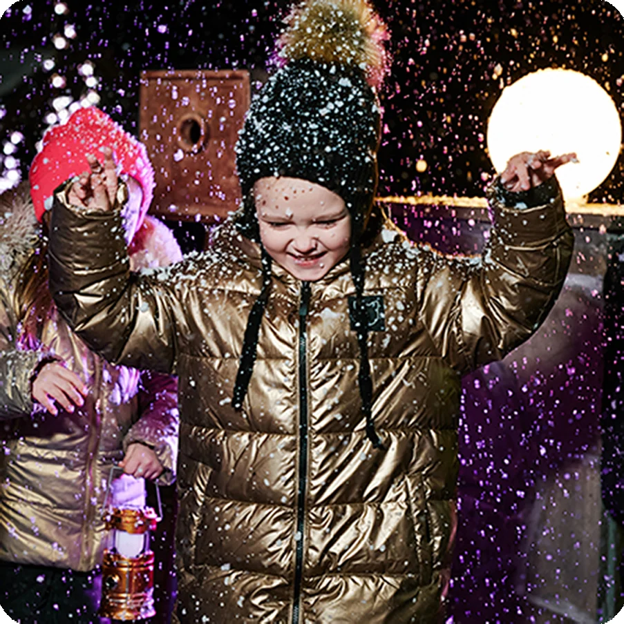

Велком-шоу во дворе
Приветственное шоу у 5-метровой елки с главными героями, космо-реквизитом, спецэффектами для разогрева (10-15 минут)
Высота карточки зависит только от длины текста. Окно с фотографией, рамка, поля и скругления у всех одинаковые.
Наклон рамки через одну зеркалится, тон карточки у каждой свой — насыщенность и светлота общие.

Приветственное шоу у 5-метровой елки с главными героями, космо-реквизитом, спецэффектами для разогрева (10-15 минут)
Тексты тут взяты разной длины нарочно, чтобы было видно поведение.
Каждый ребенок варит свой леденец на палочке и забирает его с собой
Большое представление с проекциями во всю стену, живыми актерами, спецэффектами и снегом в зале. Дети попадают внутрь истории и помогают героям спасти Новый год (40 минут)
Фотография и подарок каждому